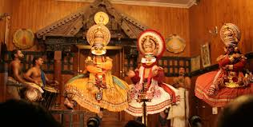
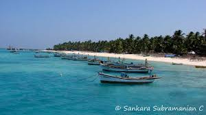
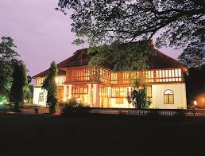

 This centre at Fort Cochin has seen many a dance performances! The amount of effort put in by the dancers is commendable.It is usually rife with locals and foreign tourists who come to enjoy the dance show. It also has morning meditation shows which one can take part in. KOCHI
 In the heart of Kochi has grown an island showcasing the indelible prowess and the intellectual level of human mind. The Willingdon Island is one of the largest human-made islands in India which is named after Lord Willingdon, the British Viceroy of India. This beautiful island provides various links between Kochi port and other national and international ports.
 One of the oldest Dutch Palaces outside Holland, the Bolgatty Palace is situated on the Bolgatty Island. It was built in the year 1744 and was the official residence of the then Governor of Kochi.